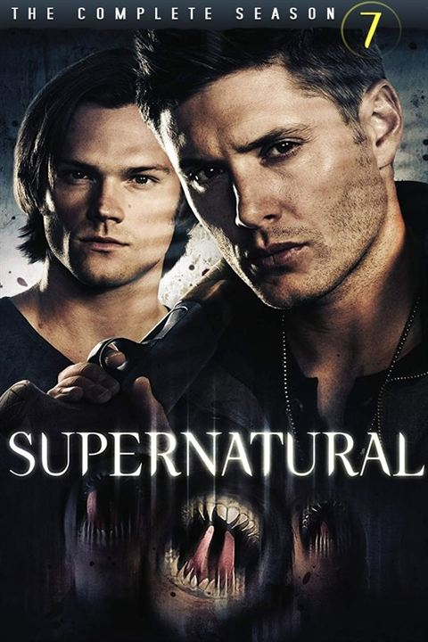
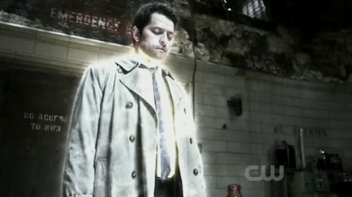
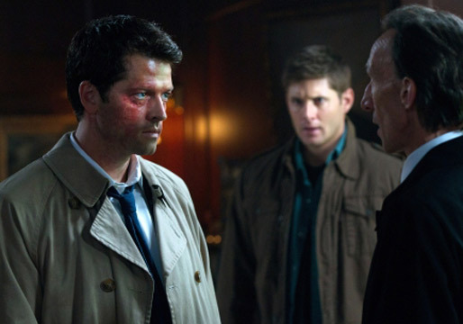
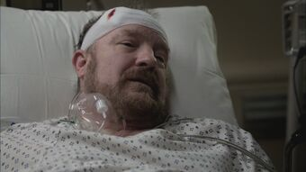
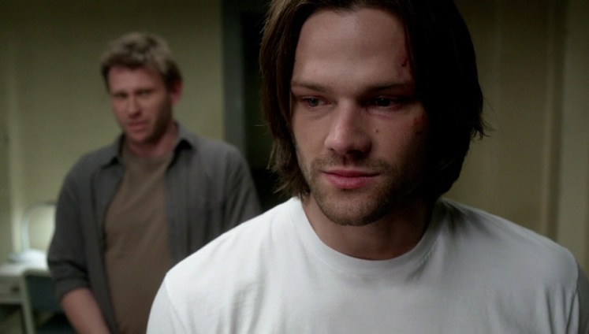
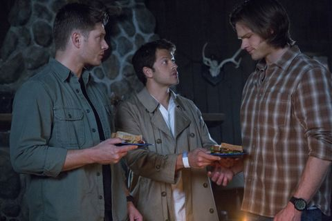
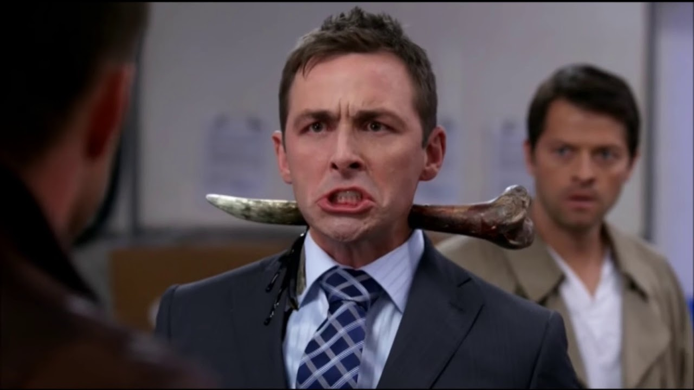

Temporada 7

Castiel não mata Sam, Dean e Bobby, mas os avisa para não interferirem em seus negócios. Assumindo seu novo papel como Deus, Castiel se propõe a corrigir alguns erros no mundo. Dean decide que eles deveriam decorrer à Morte e ordenar que ele pare Castiel, mas ele está um passo a frente deles, deixando-os encarar uma Morte muito furiosa. Morte diz que além das almas dos montros, Castiel também absorveu as criaturas mais antigas criadas por Deus: os Leviatãs. Enquanto isso Sam luta para lidar com o muro quebrado em sua cabeça.


Na sétima temporada, os Winchesters vão encontrar-se em um cenário cada vez mais sinistro, mutável, contra um novo inimigo diferente de tudo que eles já lutaram.
Eles vão encontrar seus velhos truques, armas e esconderijos todos inutilizados. Todos eles terão é um ao outro. E a certeza de que, como o último dos bandidos cowboy, o que quer que eles enfrentam, eles não vão desistir sem lutar. Sam e Dean então se recuperando da perda de seu amigo. Lembranças violentas de Sam do Inferno ameaçam ultrapassá-lo, ameaçando não apenas sua vida, mas seu irmão também.


Com o intuito de derrotar Dick Roman e os Leviatãs, Sam e Dean devem localizar três itens principais. Castiel contribui com um, mas para os últimos itens, os Winchesters devem enfrentar dois de seus mais fortes oponentes - um Alfa e Crowley. Enquanto isso, Bobby tenta um novo truque fantasma que acaba sendo muito perigoso. Os imrãos se preparam para a batalha com Dick Roman. Dick está em fase final de seu plano e os Winchester juntamente com Castiel, Bobby, Meg e Kevin, o profeta, tentam pará-lo. No Entanto, Dick é um dos mais inteligentes inimigos que eles já enfrentaram e então é um jogo mental para ver quem consegue manter a vantagem. Entretanto, como sempre, os garotos conseguem derrotar o mal, mas não sem sofrer as consequências.

